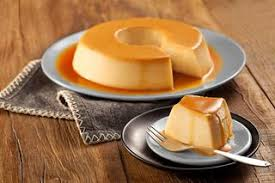
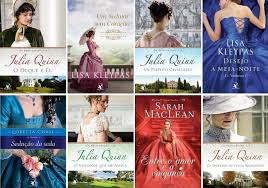

O que eu gosto de fazer
Dogs
Desde criança eu fui criada com cães e gatos e sinceramente não seria um portfólio meu sem os animais.

Cozinhar
Quando estou inspirada e vejo videos de pessoas cozinhando comida, eu gosto de faze-los e modificalos e fazer-los como eu quero e como eu espero que fique.

Literatura
Gosto de literatura romanticas, mas não de livros que no final acabam todos felizes para sempre, mas, sim esses que parece que foram feitos inspirado por vida real.